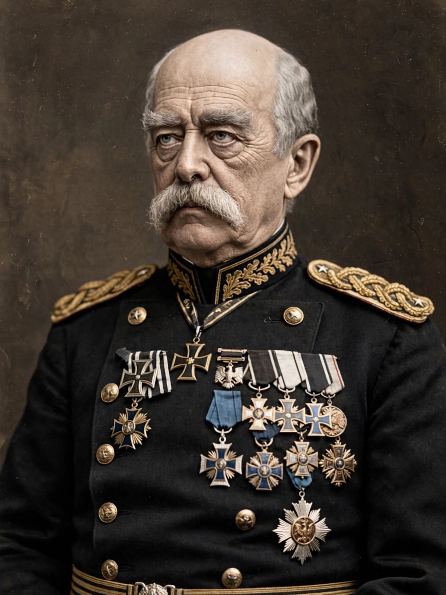

Otto Eduard Leopold, Prince of Bismarck, Duke of Lauenburg (1 April 1815 – 30 July 1898) was a Prussian and German statesman who unified Germany and served as its first Chancellor from 1871 to 1890. Known as the "Iron Chancellor", he dominated European diplomacy through a system of alliances designed to isolate France and preserve peace after unification.

| Born | 1 April 1815, Schönhausen |
|---|---|
| Died | 30 July 1898, Friedrichsruh |
| Office | Chancellor of Germany 1871–1890; Minister President of Prussia |
As Prussian minister president from 1862, Bismarck engineered wars against Denmark (1864), Austria (1866) and France (1870–71) — "blood and iron" — leading to proclamation of the German Empire at Versailles on 18 January 1871 under Wilhelm I.
He fought the Catholic Church in the Kulturkampf, repressed socialists under the Anti-Socialist Laws, yet pioneered the modern welfare state with health (1883), accident (1884) and old-age (1889) insurance to undercut the SPD.
His alliance system included the League of Three Emperors and Triple Alliance (1882). Dismissed by Wilhelm II in 1890, his system unravelled. His diplomacy is a classic example of Realpolitik. See also Ostpolitik for later German policy.